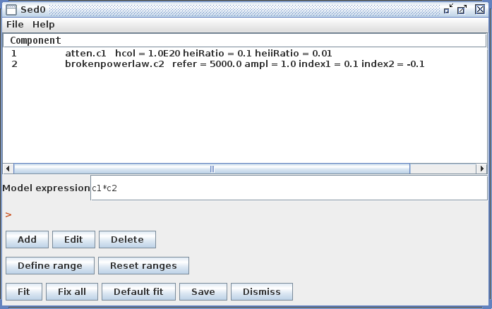

Astronomers analyze Spectral Energy Distributions (SEDs) by fitting them with models over a wide range in wavelength, from gamma rays to radio waves. The resulting best-fit values for the SED model parameters, and associated confidence limits, are physically meaningful quantities. The Iris SED analysis tool allows for robust modeling and fitting of SED data through association with Sherpa, an extensible, Python-based, multi-waveband modeling and fitting application for astronomers.
Learn how to fit models to SED data in Iris with custom model expressions, including preset and/or your own model components; how to set initial model parameter values and ranges, and choose an appropriate fit statistic and method; as well as calculate errors on best-fit model parameters.
Last Update: 07 May 2015 - updated for Iris 2.1 beta. Users can now integrate under fitted models. Template library model parameter values are interpolated using k-nearest neighbor with k=2 and order=2. Templates, table models, and functions can all be arbitrarily combined in the Model Expression.
After one or more SED data segments and/or photometric points have been read into Iris, and data display preferences set, the data may be fit with a customized model expression using the Iris Fitting Tool. Clicking the Fitting Tool icon on the Iris desktop opens a new window in which individual model components may be added in order to define a custom model expression to fit to the data, and where initial model parameter values and the spectral fitting range are set. In Iris, model amplitudes are in units of photon flux density by default, and model spectral coordinates are in Angstroms.
When the fitting window opens, the default model that is provided, powerlaw.c1, is automatically plotted as a red line, and is calculated using the default power-law parameters. (At this point, the model has not been fit to the data, therefore it appears offset from the data curve.)
The Component section of the fitting window is the place to list the model components which will be used to construct the full model expression for fitting; these components can then be arbitrarily combined to form the full model expression, in the Model Expression field. The Component field is populated with a power-law model component by default, with model identifier “c1”. The model component naming convention uses an ordered component list from top to bottom, starting with “c1”. Removing various model components from the list will cause remaining components to potentially be renamed according to their position in the list, e.g., “c2”, “c3”, and so on.
| [Back to top] |
A list of preset optical and X-ray Sherpa models is opened in a new window when the “Add” option in the fitting window is selected, from which you can choose a model to be added to the list of model components. Each model has a brief description which you can read by hovering the mouse over the model name (for more in depth descriptions of each model, see the Iris Models page). There is also the option to choose from among any custom table, template, or Python user models which you may have imported into the session via the Iris “Custom Models Manager” tool (see the “Importing Custom Models”section below to learn how to import custom models into Iris).
Considering the example of fitting an absorbed broken power-law model to an SED of object 3C 273, you would choose “atten” and “brokenpowerlaw” from the list of preset Iris models, in order to add both model components to the Component section of the fitting window (where you may have deleted the default power-law component which is automatically added to the list upon startup, as was done in this example).

To model 3C 273 emission as a broken power-law using the “brokenpowerlaw” component, and the ISM absorption using “atten,” we need to define our model expression as the product of these two components. This is done in the Model Expression field, where model components can be added or multiplied together arbitrarily to create a composite model expression. This allows for modeling emission and/or absorption features, as well as the ability to apply a more complex model to the continuum itself. For an expression containing one model component, it is trivial: simply add the name of the model component, e.g., “c1”, to the Model Expression field. For a composite model such as an absorbed broken power-law, considered in this example, you would add “c1*c2” to represent the product of the “atten” and “brokenpowerlaw” components.
As it may be necessary to fit data with a model that does not come pre-packaged with Iris, the Custom Model Manager interface is available for configuring and importing your custom table, template, or Python function user models into the Iris fitting session.
After entering the path to the file containing the custom model definition, assigning the model component a string ID, and entering the model parameter information, the custom model component may be installed. The next time the Fitting Tool is opened, the model can be selected from the menu of custom model components and added to a model expression for fitting, under Add -> Custom Model Components -> tables -> “your model string ID”.
The fields of the Custom Model Manager window are described below:
Component ID - an arbitrary string to identify the custom model for storage in Iris
“Table” radio button - identifies the custom model as a table read from file. The data contained in custom table models must have the same units that Iris uses internally for modeling and fitting. The x-axis units must be in Angstroms, and the y-axis units must be in photons/s/cm^2^/Angstrom.
“Template Library” radio button - identifies the custom model as a set of templates read from files. The data contained in custom template models must have the same units that Iris uses internally for modeling and fitting. The x-axis units must be in Angstroms, and the y-axis units must be in photons/s/cm^2^/Angstrom.
“Python Function” radio button - identifies the custom model as a function that will be imported from Python
In the text box beneath the radio buttons, type in the full path to the file containing the custom model, e.g., “<your_path_to_file>/mypowlaw.py” for the “Python Function” option.
Component Parameters -> Function Name - the name of the Python function to be added as a user model, used only for the Python Function option
Component Parameters -> Names - names of the model parameters, separated by commas
Component Parameters -> Values - the initial parameter values corresponding the parameter names listed above, separated by commas
Component Parameters -> Mins - the minimum allowed values, separated by commas.
Component Parameters -> Maxs - the maximum allowed values, separated by commas.
Component Parameters -> Fixed - Boolean values, separated by commas, indicating whether parameters are fixed at the initial value during the fit (True = fixed at starting value, False = allowed to vary during the fit.)
Install Model Component - install the model as a custom model in Iris. The next time the Fitting Tool is opened, the model can be selected from the menu of custom model components, under Add -> Custom Model Components -> functions -> “your model component ID”.
| [Back to top] |
Iris supports ASCII-format table model files consisting of two separated columns of numbers, the X (spectral coordinate) and Y (flux) data values. When the table model is “calculated” during a fit, it returns the array of Y values multiplied by a single parameter for the model, amplitude. The amplitude parameter can be varied during the fit (i.e., a scale factor applied to the tabular data).
Example entries in the Custom Model Manger window are shown in the image below for a custom power-law table model.
The example table model file “sed_temp_data.dat” - which can be found in the “examples” directory of your Iris installation - is shown below, where the X column contains wavelength values in units of Angstroms, and the Y column is flux density in units of photons/s/cm^2^/Angstrom (the internal units used for fitting in Iris are always photons/s/cm^2^Angstrom against Angstroms).
% more <basedir>/miniconda/iris/opt/iris/examples/sed_temp_data.dat
4.8588736e-06 8.4482890e-03
1.7739201e-01 4.0325498e-03
2.0675345e-01 9.2701427e-03
3.2201128e-01 6.9831383e-03
3.5436466e-01 9.1989617e-03
4.1350690e-01 2.8576857e-03
2.0675345e+00 4.1752139e-03
2.3793056e+00 6.1398901e-03
2.4776240e+00 1.1573206e-02
3.1002327e+00 2.4582868e-03
6.5314270e+00 3.7663007e-03
9.2243846e+00 5.8898001e-03
9.9269040e+00 2.2043961e-03
1.2388120e+01 1.3400554e-03
6.1940599e+01 1.1914311e-03
9.9930833e+02 1.8273482e-02
1.0302148e+03 3.5890026e-03
. .
. .
. .
Clicking “Install Model Component” installs the model as a custom model in Iris. The next time the Fitting Tool is opened, the model can be selected from the menu of custom model components, under Add -> Custom Model Components -> tables -> my_sedtab.
| [Back to top] |
Iris also supports template model libraries so that you may compare a source data spectrum against a set of template models, in order to find the single template model which best matches the source data. During the fit, the data are compared to each template, to determine which template is the closest match to the data. The parameters associated with that template are returned as the best-fit parameters.
A collection of template models may be read into Iris by entering into the Custom Model Manager window the name of a single ASCII index file which lists the file contents of a directory full of template model files, in addition to the model parameter values associated with each template file. The various model files should also be in ASCII format, and contain separated columns of X and Y coordinates, where the X column lists the wavelength in Angstroms, and the Y column is the flux density in photons/s/cm^2^/Angstrom.
The Iris Custom Model Manager window would appear as shown below when loading a template model library, where the template model index filename is entered into the “Add Custom Model Component” section, and the template model parameter information is entered into the “Component Parameters” section. In the “Component Parameters -> Names” field, the parameter names should match the names listed as parameters in the template index file.
Clicking “Install Model Component” installs the model as a custom model in Iris. The next time the Fitting Tool is opened, the model can be selected from the menu of custom model components, under Add -> Custom Model Components -> tables -> my_sedtemp.
Consider the example template model shown below, a representative of a set of power-law models, where there is a separate model file for each combination of model parameter values (power-law reference point and photon index, in this example).
$ ls <basedir>/miniconda/envs/iris/opt/iris/examples/sed_temp_index*.dat <basedir>/miniconda/envs/iris/opt/iris/examples/sed_temp_index-0.00.dat <basedir>/miniconda/envs/iris/opt/iris/examples/sed_temp_index-0.10.dat <basedir>/miniconda/envs/iris/opt/iris/examples/sed_temp_index-0.25.dat <basedir>/miniconda/envs/iris/opt/iris/examples/sed_temp_index-0.35.dat <basedir>/miniconda/envs/iris/opt/iris/examples/sed_temp_index-0.50.dat $ ls <basedir>/miniconda/envs/iris/opt/iris/examples/sed_temp_index-0.10.dat 4.8588736000000e-06 1.2188068071007e-03 1.7739201000000e-01 4.2628006741162e-04 2.0675345000000e-01 4.1980069644345e-04 3.2201128000000e-01 4.0160704511216e-04 3.5436466000000e-01 3.9778040979499e-04 4.1350690000000e-01 3.9168789965186e-04 . . .
Each of the ASCII-format template files listed above contains columns of wavelength in Angstroms and flux density in photons/s/cm^2^/Angstrom (the internal units for fitting in Iris are always photons/s/cm^2^/Angstrom against Angstroms), defining the predicted power-law spectra emitted by an X-ray source.
The template model index file which is entered into the Custom Model Manager window should contain a table with one line per template data file, with three groups of columns in the following order:
The MODELFLAG column, which separates the parameter list from the filenames/model arrays, marks lines which are to be used or not: MODELFLAG = 1 - use the file; MODELFLAG = 0 - do not use the file (note that the MODELFLAG column in this file is not a model parameter)
The FILENAME column which points to the data file for that instance, including the full directory path to the file.
Iris reads the index file in order to set up the template model with the parameters specified in the first line, and the arrays from the columns given by the data files.
An example index file appears below, with model flags (all having value 1) and filenames listed in the two right-most columns, and the power-law photon index and reference point model parameters listed from the left. The combination of the two parameter values sets the spectral shape of the model.
$ more <basedir>/miniconda/envs/iris/opt/iris/examples/sed_templates.dat # IDX REFER MODELFLAG FILENAME 0.0 5000 1 <basedir>/miniconda/envs/iris/opt/iris/examples/sed_temp_index-0.00.dat -0.10 5000 1 <basedir>/miniconda/envs/iris/opt/iris/examples/sed_temp_index-0.10.dat -0.25 5000 1 <basedir>/miniconda/envs/iris/opt/iris/examples/sed_temp_index-0.25.dat -0.35 5000 1 <basedir>/miniconda/envs/iris/opt/iris/examples/sed_temp_index-0.35.dat -0.50 5000 1 <basedir>/miniconda/envs/iris/opt/iris/examples/sed_temp_index-0.50.dat
Linear interpolation is used by the template model to match the data grid to the model grid - which must match before the fit statistics can be calculated for fitting. Instead of a simple grid-search method, K-nearest neighbor interpolation is used to evaluate the best-fit parameter values, with k=2 and order=2. The parameter values returned are a weighted interpolation between two best-fit templates.
| [Back to top] |
You also have the option of importing into Iris a custom model function which you have defined and written in the Python scripting language. The name of the Python file in which it is saved is entered into the Iris Custom Model Manager interface with the “Python function” option selected, as shown below for an example using a power-law function. Note that the Component Parameters -> Function Name field becomes active when this option is selected.
The contents of an example Python user model file is shown below, where a power-law model function named “mypowlaw” is defined:
$ more powlaw.py
import numpy
def mypowlaw(p, x):
arg = x / p[0]
arg = p[1] * numpy.power(arg, p[2])
return arg
The ‘p’ and ‘x’ function arguments represent the arrays of parameter values and x-values, respectively. For this example, the model parameters entered into the Component Parameters section of the Custom Model Manager window are the normalization reference point, amplitude, and photon index of the power-law model. The “Function Name” entered into this section must match the Python function name in the file, “mypowlaw”.
Clicking “Install Model Component” installs the model as a custom model in Iris. The next time the Fitting Tool is opened, the model can be selected from the menu of custom model components, under Add -> Custom Model Components -> tables -> my_py_powlaw.
| [Back to top] |
Initial model parameter values and ranges may be set by selecting a model in the Component list, and then “Edit”. This will open a new window containing a list of the parameters for the selected model component, with associated fields for editing.
Entering a value into a model parameter field, and then pressing the “Return” key, will update that model parameter in the Component section of the fitting window. The “Fit” checkbox next to each parameter in the editing window is for specifying whether or not to freeze that parameter during the fit; if checked, the parameter will be allowed to vary. Selecting the button labeled with a blue arrow beneath the ‘Fit’ checkbox opens a separate window in which parameter units, minimum and maximum values, and links to other parameters may be specified.
The “Fix all” and “Default Fit” options in the main fitting window may be used (while the model editor window remains open) to freeze all model parameters at current values, or thaw all model parameters (even those initially fixed), respectively.
The initial model parameter values are where Sherpa starts the fit in parameter space; the parameter ranges are the bounds of parameter space. It is not possible to fit using parameter values outside the specified parameter ranges.
| [Back to top] |
The next step in the preparation for fitting involves choosing a fit statistic and optimization method appropriate for your analysis. Selecting “Fit” in the main fitting window (where model components are listed) launches a new model fitting window (labeled “Fitted”) containing the statistic and method options. These are listed below with brief descriptions (refer to the Statistics and Optimization pages of the Sherpa website for a detailed explanation of each of the Sherpa fit statistics and methods available in Iris).
Fit Optimization Methods
Fit Statistics
The Iris default fitting method and statistic are “neldermead” and “leastsq”, respectively, which represent good choices for a robust, quick, initial fit of a relatively simple model to a data set covering potentially many orders of magnitude in flux and/or wavelength. The fit can also be done with a chi-squared statistic, with various methods for estimating variance, or with either of two maximum likelihood statistics that are useful when the data have low numbers of counts. The fitting method can be changed to “levmar” or “moncar”, but note that switching the method is less important than switching the statistic, e.g., from least-squares to chi-squared.
Nelder-Mead is the optimal fitting method to start with because it does not depend on taking derivatives of the model function. As for the fit statistic, least-squares is preferred because it does not use measured errors and thus essentially weights all data points equally (it seeks to minimize the sum of the squares of the differences between data and model values, without taking errors into account). Chi-squared fitting, in contrast, can be decidedly biased towards the data points with the lowest fluxes and smallest measured error bars (when there are data points with measured errors that are orders of magnitude smaller than the error bars on most of the data points, then these points become the biggest contributors to the chi-squared value).
In subsequent fits - e.g., after selecting a different data range to fit, adding in new model components as needed, and so on - the statistic can be switched to a chi-squared option to use measured errors (preferably chi2datavar, which is chi-squared with data variance). Since measured errors are provided, this means the variance is taken directly from the errors provided with the data, when the data file is read in.
Note: When one or multiple SED segments is fit in Iris, any data points with associated zero-value errors are ignored in the fit. This design choice is intended as a safeguard against yielding potentially misleading fit results in the analysis of your SED data. Iris interprets a zero-value error* not to mean that the uncertainty on the associated data value is actually zero, but that a measure of the uncertainty is not available for that particular photometric point.
| [Back to top] |
Before initiating a fit of the defined model to a SED in Iris, the specific subset of the SED data to be included in the fit (if not the entire SED) should be specified using the “Define Range” option in the main fitting window. Selecting this option will prompt you to click on the data display twice, once to define the lower endpoint of the data range to be fit, and once for the upper endpoint.
Having built a model expression and set initial parameter values, chosen an appropriate fit statistic and optimization method for your analysis, and defining the range of data to be fit, you are ready to initiate the fitting process by selecting “Start” in the Fitted window. When the fit is complete, a red model curve appears overplotted on the SED data in the Iris main display (beyond the specified data range to be fit; this extraneous portion of the fitted model may be ignored).
When the fit has finished, the model parameter values will appear updated in the Component field of the fitting window, and fit statistics will be displayed in the fitting tab of the Fitted window, including the number of data points used in the fit, the degrees of freedom, and the probability that the fit is consistent with the data (q-value), where applicable (when fitting with the least-squares or Cash statistic, the “reduced statistic” value and q-value are not available, as they cannot be computed).
When fitting with one of the chi-squared statisics, or the chi-squared-like cstat statistic, the Confidence tab returns the requested sigma/percent confidence intervals on the best-fit model parameters, calculated using the statistic and method chosen for the fit. For example, entering “1.6” in the “sigma” field will return th 90% confidence limits on the model parameter values..
If the statistic is left at the default “leastsq”, Iris will issue an error stating that least-squares cannot be used with the confidence limit function (this is because the only way calculate to confidence limits is to know the probability distribution for the fit statistic, which is known for the chi-squared and chi-squared-lke cstat statistic, but not least squares).
Also of note is that blank or “NaN” values are returned in the confidence results when a parameter bound is found to lie outside the hard limit boundary for a model parameter (which ought not to be changed by the user, so there is not an option to do so in Iris). This could result from an issue with the signal-to-noise of the data, the applicability of the model to the data, systematic errors in the data, among others things. A parameter hard limit represents either a hard physical limit (e.g., temperature is not allowed to go below zero), a mathematical limit (e.g., prevent a number from going to zero or below, when the log of that number will be taken), or the limit of what a float or double can hold (the fit should not be driven above or below the maximum or minimum values a variable can hold).
You can iterate through the fitting process in Iris as many times as necessary - adding or deleting models from the model expression; changing parameter values or ranges; including or excluding new points from the SED - until you find a satisfactory model that best describes your SED data.
| [Back to top] |
Once a spectral model is satisfactorily fitted, the custom fitted model parameters can be saved to a local file before exiting the fitting session, by making an appropriate selection in the File menu of the fitting window.
Selecting the File -> Write to text file option saves the spectral model to file in a human-readable text format. The “Write active components” option in this submenu writes only the model components which were used in the fit; example output is shown below:
$ more 3c273_atten_bpl_active_comps.txt
File: 3C 273
Thu Feb 26 15:46:31 EDT 2015 Iris 2
TARGNAME: 3C 273
Model Expression:
c1*c2
Fit parameters:
Final fit statistic: 0.010714114984176791
Reduced statistic: nan
Probability [Q-value]: nan
Degrees of freedom: 413.0
Data points: 419
Last function evaluation: 394
Component 1: atten.c1
hcol = 1.0E20 (NaN NaN)
heiRatio = 0.04177875 (NaN NaN)
heiiRatio = 0.74654233 (NaN NaN)
Component 2: brokenpowerlaw.c2
F refer = 300000.0 angstroms
ampl = 0.0062282784 (0.1065081 NaN)
index1 = -0.039390083 (NaN -4.82435)
index2 = -0.6063001 (2.4033892 NaN)
Selecting File -> Write to file, instead, saves the model to a file in a format (CDB) that can be read back by the tool in a future data analysis session. (CDB is an XML format for reading model files in and out of Iris.)
This customized Iris fitting session may be restored by selecting the File->Read from file menu option within the Iris fitting window.
| [Back to top] |
After fitting a SED, you can estimate fluxes through user-defined passbands and photometric filters by integrating under the model components. This is done from the “Calculate Flux” tab in the Science tools, which is opened by clicking the “Shift, Interpolate, Integrate” icon on the desktop. The user may integrate under the full model or an arbitrary combination of the model components. The Fitting Tool must remain open for model integration.
After opening the “Calculate Flux” tab, make sure Model Integration is selected (it should “Integrate Model (YES)”). By default, the full model will be used to evaluate the fluxes. For our fit of 3c273, the model expression is "c1*c2". A quick-look view of the model and the parameter values can be displayed by clicking the “Show Model” button.
You can change the number of spectral bins used to calculate the integral by adjusting the value in the “Model evaluation bin #” box.
By checking-off “Full model,” the user can arbitrarily combine the model components, then integrate the expression in the “Model Expression” field. This means that users can integrate under individual model components. Multiplication and addition of other model components and numeric values are acceptable. For example, the expressions "c2 * 3.678", "c2 + c1", and "c1 + c2 * 1.2" are allowed.
Say we want to estimate the total infrared flux and the flux through the Herschel PACS and SPIRE bands . Going back to the “Calculate Flux” in the Science tool, we add the Hershcel photometry filters (select “Photometry Filter” -> “Choose” and search for “Herschel”) and add a user-defined pass band from 0.8 to 1000 microns (8000 - 1E7 Angstroms). To integrate under the fitted model, we turn “Model Integration” on (YES), and click “Calculate.”
The results can be exported as a new SED with the “Create SED” button, or may be saved to a text file with “Save.” The text file can be loaded back into Iris as an ASCII Table.
NOTE: If the user exits the main Fitting Tool window, the user will no longer be able to integrate under the fitted model, as the models will be lost from closing the fitting session. Iris will ask the user if they really want to leave the fitting session if they try to close the Fitting Tool.
| [Back to top] |
| Date | Changes |
|---|---|
| 09 Aug 2011 | updated for Beta 2.5 |
| 25 Sep 2011 | updated for Iris 1.0 |
| 08 Jun 2012 | updated for Iris 1.1 |
| 02 Jan 2013 | updated for Iris 1.2 |
| 21 Jun 2013 | updated for Iris 2.0 |
| 05 Aug 2013 | updated Iris screenshots |
| 02 Dec 2013 | updated for Iris 2.0.1 |
| 07 May 2015 | updated for Iris 2.1 beta. Users can now integrate under fitted models. Template library model parameter values are interpolated using k-nearest neighbor with k=2 and order=2. Templates, table models, and functions can all be arbitrarily combined in the Model Expression. |
| [Back to top] |
{kind=link}
{kind=link}
{kind=link}
{kind=link}
{kind=link}
{kind=link}